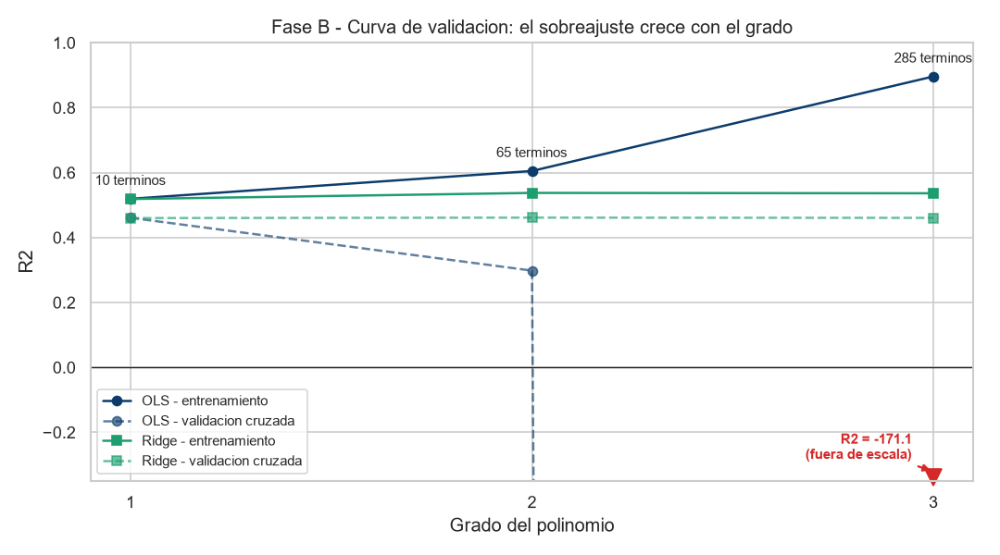

Grado 2 con regularización Ridge · 65 términos · dataset
load_diabetes de Scikit-learn · partición 75 / 25
A partir de estas 10 variables el modelo construye 65 términos: las 10 originales, sus 10 cuadrados y los 45 productos cruzados.
En el modelo polinomial el efecto de una variable se reparte entre su término lineal, su cuadrado y sus productos cruzados: por eso los coeficientes ya no son interpretables individualmente.
| Término | tᵢ | μᵢ | σᵢ | zᵢ | βᵢ | βᵢ · zᵢ |
|---|
| Grado | Términos | Ratio n/p | R² entren. | R² prueba | R² CV 5-fold | Brecha |
|---|

Con Ridge el sobreajuste desaparece en los tres grados, pero el resultado converge al del modelo lineal (R² de CV ≈ 0.460): la penalización no extrae información de los términos polinomiales, los neutraliza. El α elegido por validación cruzada crece con el grado (1.58 → 25.12 → 199.53).
| Criterio | Lineal Múltiple | Polinomial gr. 2 + Ridge |
|---|---|---|
| Términos | 10 | 65 |
| R² validación cruzada | 0.4606 | 0.4611 |
| Desviación entre particiones | ±0.085 | ±0.083 |
| Brecha entrenamiento − CV | 0.058 | 0.076 |
| Coeficientes interpretables | Sí | No |
| Depende de hiperparámetro | No | Sí (α) |
La diferencia en validación cruzada es de +0.0005, frente a una desviación entre particiones de ±0.083: la ventaja aparente es 166 veces menor que el ruido de la propia medición. Los modelos son estadísticamente indistinguibles y, por parsimonia, se recomienda el lineal múltiple. Que la expansión no aporte nada significa que la relación es esencialmente lineal en el rango observado — coherente con el diagnóstico de residuos del Informe 1, obtenido por una vía independiente.